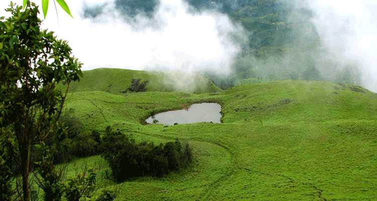
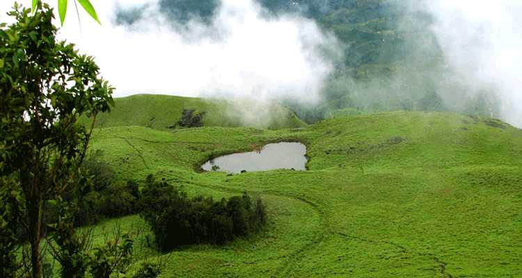

MAIN ATTRACTIONS
Wayanad wildlife sanctuary
Wayanad Wildlife Sanctuary is the second largest wildlife sanctuary in Kerala and comprises of rare as well as endangered species of both flora and fauna. It is surrounded by the protected areas of Mudumalai in Tamil Nadu as well as Nagarhole and Bandipur in Karnataka. Founded in the year 1973, the wildlife sanctuary is an integral part of the Nilgiri Biosphere Reserve which was the first biosphere out of the 14 present in India.

 

Chembra peak
With a height 2100 m, the Chembara peak is an attractive destination for Campers and Mountaineers. Many guided expeditions are conducted to the tallest summit of Wayanad.
Edakkal caves
Famous for its exquisite rock and wall carvings, this pre-historic Edakkal Caves measures 96 ft long and 22 ft wide. You need to trek for one and half hour to hit the cave entrance, and another 45 minutes to reach the mouth of the cave. Boating cost: Pedal boat (Rs 30/2 people, Rs 50/4 people), Row boat (Rs 50/4 people) and Kayaking (Rs 100/30 minutes)


Soochipara falls
Soochipara Falls is a three-tiered waterfall, which cascades at its best between the months of June and January. The site is also popular with rock climbers apart from picnickers.
Kuruva island
Situated on the tributaries of river Kabani is the Kuruva Island surrounded by a picturesque view of enchanting evergreen forests. The site is popular among those seeking a quiet get-away from the hustle bustle of the cities.